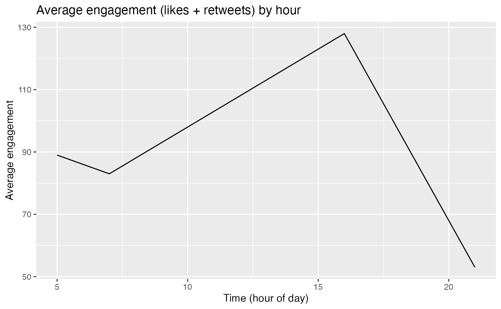

# If you have a twitter developer account/app you can copy/paste your access information in place of my Sys.getenv("") functions
appname <- Sys.getenv("appname")
key <- Sys.getenv("key")
secret <- Sys.getenv("secret")
access_token <- Sys.getenv("access_token")
access_secret <- Sys.getenv("access_secret")
twitter_token <- create_token(
app = appname,
consumer_key = key,
consumer_secret = secret,
access_token = access_token,
access_secret = access_secret)
timeline_rtweet <- get_timeline("taylorswift13", n = 200)
#> Warning: 215 - Bad Authentication data.
#> Warning: rate limit exceeded. mins until rate limit resets.
head(timeline_rtweet)
#> # A tibble: 0 x 0Since everyone may not have twitter developer access we have provided an example dataframe that we have previously scraped (NOTE, please set your working director to rtweetclean/vignettes to load this dataframe)…
created_at = c("2021-03-06 16:03:31",
"2021-03-05 21:57:47",
'2021-03-05 05:50:50',
'2021-03-05 7:32:33')
text <- c("example tweet text 1 @user2 @user",
"#example #tweet 2 ",
"example tweet 3 https://t.co/G4ziCaPond",
"example tweet 4")
retweet_count <- c(43, 12, 24, 29)
favorite_count <- c(85, 41, 65, 54)
timeline_rtweet_toy <- data.frame(text, retweet_count, favorite_count, created_at)
head(timeline_rtweet_toy)
#> text retweet_count favorite_count
#> 1 example tweet text 1 @user2 @user 43 85
#> 2 #example #tweet 2 12 41
#> 3 example tweet 3 https://t.co/G4ziCaPond 24 65
#> 4 example tweet 4 29 54
#> created_at
#> 1 2021-03-06 16:03:31
#> 2 2021-03-05 21:57:47
#> 3 2021-03-05 05:50:50
#> 4 2021-03-05 7:32:33The first of our functions, clean_df() is used to modify the timeline dataframe provided by rtweet by adding new columns by extraction information from tweets that tweepy does not provide on its own. The user is able to choose which columns are generated. Options for generateable columns include…
text_only: strips emojis, hashtags, and hyperlinks from the text column
word_count: counts the number of words contained in the text_only column
emojis: contains the extracted emojis from tweet text column
proportion_of_avg_retweets: a proportion value of how many retweets a tweet received compared to the average in the dataframe
proportion_of_avg_favorites: a proportion value of how many favorites a tweet received compared to the average in the dataframe
Different columns can be specified to be added by specifying their arguments as TRUE or FALSE when calling the clean_df() function. They are all set to TRUE by default.
clean_df <- function(raw_tweets_df,
text_only = TRUE,
word_count = TRUE,
emojis = TRUE,
proportion_of_avg_retweets = TRUE,
proportion_of_avg_favorites = TRUE)
| x |
|---|
| text_only |
| word_count |
| emojis |
| prptn_rts_vs_avg |
| prptn_favorites_vs_avg |
We can see that new columns have been added to the dataframe. The contents of these columns can be seen below alongside the original text column provided by rtweet for comparison…
kable(head( subset(cleaned_timeline, select=c(text,text_only,word_count,emojis, prptn_rts_vs_avg, prptn_favorites_vs_avg)),5))| text | text_only | word_count | emojis | prptn_rts_vs_avg | prptn_favorites_vs_avg |
|---|---|---|---|---|---|
| example tweet text 1 @user2 @user | example tweet text 1 | 4 | 1.5925926 | 1.3877551 | |
| #example #tweet 2 | 2 | 1 | 0.4444444 | 0.6693878 | |
| example tweet 3 https://t.co/G4ziCaPond | example tweet 3 | 3 | 0.8888889 | 1.0612245 | |
| example tweet 4 | example tweet 4 | 3 | 1.0740741 | 0.8816327 |
tweet_words can be used with a dataframe that is returned by clean_df() and returns a list of the most frequently used words based on the text_only column generated by clean_df(). The top_n argument can be adjusted to return a specified number of the most frequently used words in the text_only column.
tweet_words(clean_rtweet_dataframe, top_n = 5)
tweet_words_example <- tweet_words(cleaned_timeline, top_n=30)
kable(tweet_words_example)| words | count |
|---|---|
| tweet | 3 |
| example | 3 |
| text | 1 |
| 4 | 1 |
| 3 | 1 |
| 2 | 1 |
| 1 | 1 |
Takes the dataframe output of clean_df() as input. Takes the text_only column of tweets and returns a dataframe summarizing the number of tweeted words associated with particular emotional sentiments based on the ‘crowd-sourced NRC Emotion Lexicon’ . By default all sentiments listed in the lexicon will be presented regardless of if they are included in the dataset or not. If you wish to only see the sentiments that are present in the dataset then set drop_sentiment to FALSE.
sentiment_total(clean_rtweet_dataframe, drop_sentiment = FALSE)
sentiment_total_example <- sentiment_total(cleaned_timeline, drop_sentiment = TRUE)
sentiment_total_example
#> # A tibble: 0 x 3
#> # … with 3 variables: sentiment <chr>, word_count <dbl>, total_words <int>engegement_by_hour() is used to return a line plot generated via ggplot2 of the combined total of likes and retweets a user received depending on the hour of day their tweets were made at. It takes either a dataframe returned by clean_df() OR an unedited dataframe returned by the rtweet function get_timeline() as input and builds a graph based on the created_at column.
engagement_by_hour(clean_rtweet_dataframe)
engagement_by_hour(cleaned_timeline)